토목기사 (2016-03-01 기출문제)
1과목: 응용역학
1. 변의 길이 a인 정사각형 단면의 장주(長住)가 있다. 길이가 l이고, 최대임계축하중이 P이고 탄성계수가 E 라면 다음 설명 중 옳은 것은?
- P는 E에 비례, a의 3제곱에 비례, 길이 l2에 반비례
- P는 E에 비례, a의 3제곱에 비례, 길이 l3 에 반비례
- P는 E에 비례, a의 4제곱에 비례, 길이 l2 에 반비례
- P는 E에 비례, a의 4제곱에 비례, 길이 l3 에 반비례
(정답률: 74%)

2. 다음 그림과 같은 구조물에서 B점의 수평변위는? (단, EI는 일정하다.)
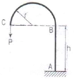
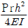
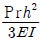
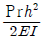
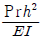
(정답률: 56%)
3. 그림과 같이 속이 빈 직사각형 단면의 최대 전단응력은? (단, 전단력은 2t)
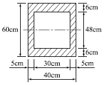
- 2.125kg/cm2
- 3.22kg/cm2
- 4.125kg/cm2
- 4.22kg/cm2
(정답률: 68%)
4. 다음 그림과 같은 3활절 포물선 아치의 수평반력(H4)은?
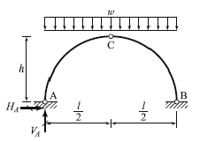
- 0
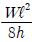
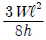
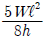
(정답률: 75%)
5. 다음 그림과 같은 보에서 휨모멘트에 의한 탄성변형 에너지를 구한 값은?
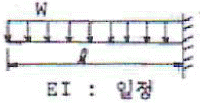
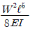
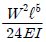
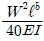
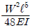
(정답률: 59%)
6. 다음과 같은 2경간 연속보에서 B점이 5cm 아래로 침하하고, C점이 2cm 위로 상승하는 변위를 각각 취했을 때 B점이 휨모멘트로서 옳은 것은?
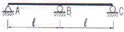
- 20EIℓ2
- 18EIℓ2
- 15EIℓ2
- 12EIℓ2
(정답률: 61%)
7. 무게 1kgf의 물체를 두 끈으로 늘여 뜨렸을 때 한 끈이 받는 힘의 크기 순서가 옳은 것은?
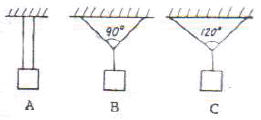
- B>A>C
- C>A>B
- A>B>C
- C>B>A
(정답률: 80%)
8. 아래 그림과 같은 캔틸레버 보에서 B점의 연직변위(δ)는? (단, M0=0.4tㆍm, P=1.6t, L=2.4m, EI=600tㆍm2이다.)
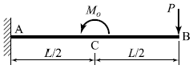
- 1.08cm(↓)
- 1.08cm(￪)
- 1.37cm(↓)
- 1.37cm(￪)
(정답률: 63%)
9. 직경 d인 원형단면의 단면 2차 극모멘트 Ip의 값은?
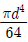
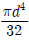
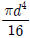
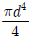
(정답률: 74%)
10. 다음 그림과 같은 세 힘이 평형 상태에 있다면 점 C에서 작용하는 힘 P와 BC사이의 거리 x로 옳은 것은?
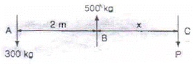
- P = 200㎏, x = 3m
- P = 300㎏, x = 3m
- P = 200㎏, x = 2m
- P = 300㎏, x = 2m
(정답률: 77%)
11. 다음 트러스에서 CD 부재의 부재력은?(단, FA=9m)
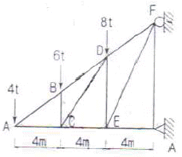
- 5.542t(인장)
- 6.012t(인장)
- 7.211t(인장)
- 6.242t(인장)
(정답률: 53%)
12. 그림과 같은 캔틸레버보에서 최대 처짐각(θB)은? (단, EI는 일정하다.)
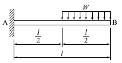
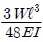
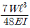
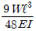
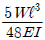
(정답률: 63%)
13. 평균 지름 d=1200㎜, 벽두께t=6㎜를 갖는 긴 강제수도관(鋼製水道管)이 P=10㎏/cm2의 내압을 받고 있다. 이 관벽 속에 발생하는 원환응력(圓環應力)의 크기는?
- 16.6㎏/cm2
- 450㎏/cm2
- 900㎏/cm2
- 1000㎏/cm2
(정답률: 62%)
14. 다음 그림과 같은 보에서 B지점의 반력이 2P가 되기 위해서 b/a 는 얼마가 되어야 하는가?
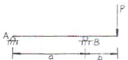
- 0.50
- 0.75
- 1.00
- 1.25
(정답률: 76%)
15. B점의 수직변위가 1이 되기 위한 하중의 크기 P는? (단, 부재의 축강성은 EA로 동일하다.)
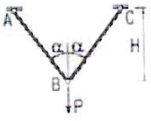
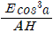
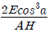
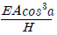
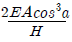
(정답률: 70%)
16. 다음 그림에서 빗금친 부분의 X 축에 관한 단면 2차 모멘트는?
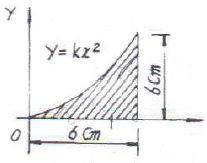
- 56.2cm4
- 58.5cm4
- 61.7cm4
- 64.4cm4
(정답률: 45%)
17. 다음에서 부재 BC에 걸리는 응력의 크기는?
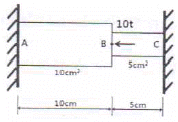
- 2/3 t/cm2
- 1 t/cm2
- 3/2 t/cm2
- 2 t/cm2
(정답률: 59%)
18. 아래 그림과 같은 단순보의 B점에 하중 5t이 연직 방향으로 작용하면 C점에서의 휨모멘트는?
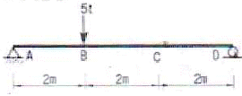
- 3.33 tㆍm
- 5.4 tㆍm
- 6.67 tㆍm
- 10.0 tㆍm
(정답률: 65%)
19. 길이 10m, 폭 20cm, 높이 30cm인 직사각형 단면을 갖는 단순보에서 자중에 의한 최대휨응력은? (단, 보의 단위중량은 25kN/m3으로 균일한 단명을 갖는다.)
- 6.25MPa
- 9.375MPa
- 12.25MPa
- 15.275MPa
(정답률: 45%)
20. 절점 O는 이동하지 않으며, 재단 A, B, C가 고정일 때 Mco 의 크기는 얼마인가? (단, K는 강비이다.)
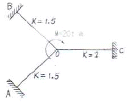
- 2.5 tㆍm
- 3 tㆍm
- 3.5 tㆍm
- 4 tㆍm
(정답률: 71%)
2과목: 측량학
21. 종단면도에 표기하여야하는 사항으로 거리가 먼 것은?
- 흙깍기 토량과 흙쌓기 토량
- 거리 및 누가거리
- 지반고 및 계획고
- 경사도
(정답률: 68%)
22. 그림과 같은 복곡선(Compound Curve)에서 관계식으로 틀린 것은?
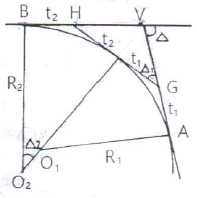
- Δ1=Δ-Δ2
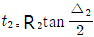
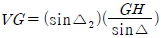
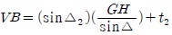
(정답률: 54%)
23. 지구의 곡률에 의하여 발생하는 오차를 1/106까지 허용한다면 평면으로 가정할 수 있는 최대 반지름은? (단, 지구곡률반지름 R=6370km)
- 약 5 km
- 약 11 km
- 약 22 km
- 약 110 km
(정답률: 63%)
24. 3차 중첩 내삽법(Cubic convolution)에 대한 설명으로 옳은 것은?
- 계산된 좌표를 기준으로 가까운 3개의 화소값의 평균을 취한다.
- 영상분류와 같이 원영상의 화소값과 통계치가 중요한 작업에 많이 사용된다.
- 계산이 비교적 빠르며 출력영상이 가장 매끄럽게 나온다.
- 보정전 자료와 통계치 및 특성의 손상이 많다.
(정답률: 49%)
25. 그림과 같은 유토곡선(mass curve)에서 하향구간이 의미하는 것은?
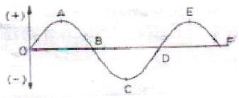
- 성토구간
- 절토구간
- 운반토량
- 운반거리
(정답률: 70%)
26. 높이 2774m인 상의 정상에 위치한 저수지의 가장 긴 변의 거리를 관측한 결과 1950m이었다면 평균 해수면으로 환산한 거리는? (단, 지구반지름 R=6377km)
- 1949.152m
- 1950.849m
- -0.848m
- 0.848m
(정답률: 52%)
27. 축척 1:2000 도면상의 면적을 축척 1:1000으로 잘못 알고 면적을 관측하여 24000m2 를 얻었다면 실제 면적은?
- 6000m2
- 12000m2
- 48000m2
- 96000m2
(정답률: 63%)
28. 그림과 같이 수준측량을 실시하였다. A점의 표고는 300m이고, B와 C구간은 교호수준측량을 실시하였다면, D점의 표고는? (표고차:A→B:+1.233m, B→C:+0.726m, C→B:-0.720m, C→D:-0.926m)
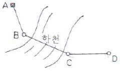
- 300.310m
- 301.030m
- 302.153m
- 302.882m
(정답률: 63%)
29. 촬영고도 1000m로부터 초점거리 15cm의 카메라로 촬영한 중복도 60%인 2장의 사진이 있다. 각각의 사진에서 주점기선장을 측정한 결과 124mm와 132mm이었다면 비고 60m인 굴뚝의 시차차는?
- 8.0mm
- 7.9mm
- 7.7mm
- 7.4mm
(정답률: 46%)
30. 지표면상의 A, B간의 거리가 7.1km라고 하면 B 점에서 A점을 시준할 때 필요한 측표(표척)의 최소 높이로 옳은 것은? (단, 지구의 반지름은 6,370km이고, 대기의 굴절에 의한 요인은 무시한다.)
- 1m
- 2m
- 3m
- 4m
(정답률: 59%)
31. 그림과 같이△P1P2C 는 동일 평면상에서 α1=62°8', α2=56°27', B=60.00m 이고 연직각 v1=20°46' 일 때 C로부터 P까지의 높이 H는?
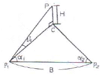
- 24.23m
- 22.90m
- 21.59m
- 20.58m
(정답률: 56%)
32. 확폭량이 S인 노선에서 노선의 곡선 반지름(R)을 두 배로 하면 확폭량(S')은?
- S' = 1/4 S
- S' = 1/2 S
- S' = 2S
- S' = 4S
(정답률: 59%)
33. 다각측량을 위한 수평각 측정방법 중 어느 측선의 바로 앞 측선의 연장선과 이루는 각을 측정하여 각을 측정하는 방법은?
- 편각법
- 교각법
- 방위각법
- 전진법
(정답률: 47%)
34. 수준측량과 관련된 용어에 대한 설명으로 틀린 것은?
- 수준면(level surface)은 각 점들이 중력방향에 직각으로 이루어진 곡면이다.
- 지구곡률을 고려하지 않는 범위에서는 수준면(level surface)을 평면으로 간주한다.
- 지구의 중심을 포함한 평면과 수준면이 교차하는 선이 수준선(level line)이다.
- 어느 지점의 표고(elevation)라 함은 그 지역 기준타원체로부터의 수직거리를 말한다.
(정답률: 55%)
35. 하천에서 2점법으로 평균유속을 구할 경우 관측하여야 할 두 지점의 위치는?
- 수면으로부터 수심의 1/5, 3/5 지점
- 수면으로부터 수심의 1/5, 4/5 지점
- 수면으로부터 수심의 2/5, 3/5 지점
- 수면으로부터 수심의2/5, 4/5 지점
(정답률: 67%)
36. 직사각형의 두변의 길이를 1/100 정밀도로 관측하여 면적을 산출할 경우 산출된 면적의 정밀도는?
- 1/50
- 1/100
- 1/200
- 1/300
(정답률: 67%)
37. 삼각측량을 위한 삼각망 중에서 유심다각망에 대한 설명으로 틀린 것은?
- 농지측량에 많이 사용된다.
- 방대한 지역의 측량에 적합하다.
- 삼각망 중에서 정확도가 가장 높다.
- 동일측점 수에 비하여 포함면적이 가장 넓다.
(정답률: 70%)
38. 사진측량의 특수 3점에 대한 설명으로 옳은 것은?
- 사진 상에서 등각점을 구하는 것이 가장 쉽다.
- 사진의 경사각이 0° 인 경우에는 특수 3점이 일치한다.
- 기복변위는 주점에서 0이며 연직점에서 최대이다.
- 카메라 경사에 의한 사선방향의 변위는 등각점에서 최대이다.
(정답률: 57%)
39. 등경사인 지성선 상에 있는 A, B표고가 각각 43m,63m이고 AB의 수평거리는 80m이다. 45m,50m 등고선과 지성선 AB의 교점을 각각 C,D라고 할 때 AC의 도상길이는? (단, 도상축척은 1:100이다.)
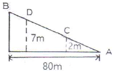
- 2cm
- 4cm
- 8cm
- 12cm
(정답률: 60%)
40. 트래버스 측량에 관한 일반적인 사항에 대한 설명으로 옳지 않은 것은?
- 트래버스 종류 중 결합트래버스는 가장 높은 정확도를 얻을 수 있다.
- 각관측 방법 중 방위각법은 한번 오차가 발생하면 그 영향은 끝까지 미친다.
- 폐합오차 조정방법 중 컴퍼스법칙은 각관측의 정밀도가 거리관측의 정밀도보다 높을 때 실시한다.
- 폐합트래버스에서 편각의 총합은 반드시 360°가 되어야 한다.
(정답률: 67%)
3과목: 수리학 및 수문학
41. 개수로 지배단면의 특성으로 옳은 것은?
- 하천흐름이 부정류인 경우에 발생한다.
- 완경사의 흐름에서 배수곡선이 나타나면 발생한다.
- 상류 흐름에서 사류 흐름으로 변화할 때 발생한다.
- 사류인 흐름에서 도수가 발생할 때 발생한다.
(정답률: 59%)
42. 그림과 같은 학주계에서 수은면의 차가 10cm이었다면 A,B점의 수압차는? (단, 수은은 비중=13.6, 무게 1kg=9.8N)
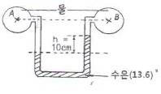
- 133.5kPa
- 123.5kPa
- 13.35kPa
- 12.35kPa
(정답률: 50%)
43. 도수(hydraulic jump) 전후의 수심 h1, h2의 관계를 도수 전의 Froude수 r1의 함수로 표시한 것으로 옳은 것은?
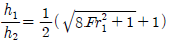
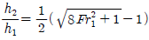
(정답률: 68%)
44. 관로 길이 100m, 안지름 30cm의 주철관에 0.1m3/s의 유량을 송수할 때 손실수두는? (단, v=C√(RI), C=63m2/s)이다.
- 0.54m
- 0.67m
- 0.74m
- 0.88m
(정답률: 56%)
45. 안지름 2m의 관내를 20℃의 물이 흐를 때 동점성 계수가 0.0101cm2/s 이고 속도가 50 cm/s라면 이 때의 레이놀즈수(Reynolds number)는?
- 960,000
- 970,000
- 980,000
- 990,000
(정답률: 64%)
46. 관 벽면의 마찰력 τ0유체의 밀도 ρ, 점성계수를 μ라 할 때 마찰속도(U*)는?
(정답률: 55%)
47. 저수지의 물을 방류하는데 1:225 로 축소된 모형에서 4분이 소요되었다면, 원형에서의 소요시간은?
- 60분
- 120분
- 900분
- 3375분
(정답률: 52%)
48. 강우강도(I), 지속시간(D), 생기반도(F) 관계를 표현하는 식 I= 에 대한 설명으로 틀린 것은?
- t : 강우의 지속시간(min)으로서, 강우가 계속 지속 될수록 강우강도는( )는 커진다.
- I : 단위시간에 내리는 강우량(mm/hr)인 강우강도이며 각종 수문학적 해석 및 설계에 필요하다.
- T : 강우의 생기빈도를 나타내는 연수(年數)로 재현기간(년)을 의미한다.
- k, x, n : 지역에 따라 다른 값을 가지는 상수이다.
(정답률: 62%)
49. 지속시간 2hr인 어느 단위유량도의 기저시간이 10hr이다. 강우강도가 각각 2.0, 3.0 및 5.0cm/hr이고 강우지속기간은 똑같이 모두 2hr인 3개의 유효강우가 연속해서 내릴 경우 이로 인한 직접유출수문곡선의 기저시간은?
- 2hr
- 10hr
- 14hr
- 16hr
(정답률: 53%)
50. 직사각형의 단면 (폭 4m×수심 2m)개수로에서 Manning공식의 조도계수 n=0.017이고 유량 Q=15m3/s일 때 수로의 경사(I)는?
- 1.016×103
- 4.584×103
- 15.365×103
- 31.875×103
(정답률: 66%)
51. 하상계수(河狀系數)에 대한 설명으로 옳은 것은?
- 대하천의 주요 지점에서의 강우량과 저수량의 비
- 대하천의 주요 지점에서의 최소유량과 최대유량의 비
- 대하천의 주요 지점에서의 홍수량과 하천유지유량의 비
- 대하천의 주요 지점에서의 최소유량과 갈수량의 비
(정답률: 72%)
52. 어떤 유역에 표와 같이 30분간 집중호우가 발생하였다. 지속시간 15분인 최대 강우 강도는?(오류 신고가 접수된 문제입니다. 반드시 정답과 해설을 확인하시기 바랍니다.)
- 80mm/hr
- 72mm/hr
- 64mm/hr
- 50mm/hr
(정답률: 62%)
53. 수평으로 관 A와 B가 연결되어 있다. 관A에서 유속은 2m/s, 관 B에서의 유속은 3m/s 이며, 관B에서의 유체압력이 9.8kN/m2이라 하면 관A에서의 유체압력은? (단, 에너지 손실은 무시한다.)
- 2.5kN/m2
- 12.3kN/m2
- 22.6kN/m2
- 37.6kN/m2
(정답률: 49%)
54. 연직오리피스에서 일반적인 유량계수C의 값은?
- 대략 1.00 전후이다.
- 대락 0.80 전후이다,
- 대략 0.60 전후이다.
- 대략 0.40 전후이다.
(정답률: 59%)
55. 직사각형 단면의 수로에서 최소비에너지가 1.5m라면 단위폭당 최대유량은? (단, 에너지보정계수 α=1.0)
- 2.86m3/s
- 2.98m3/s
- 3.13m3/s
- 3.32m3/s
(정답률: 52%)
56. 부피가 4.6m3인 유체의 중량이 51.548kN 일 때 이 우체의 비중은?
- 1.14
- 5.26
- 11.40
- 1143.48
(정답률: 49%)
57. 여과량이 2m3/s이고 동수경사가 0.2, 투수계수가 1cm/s일 때 필요한 여과지 면적은?
- 2500m3
- 2000m3
- 1500m3
- 1000m3
(정답률: 67%)
58. 두 개의 불투수층 사이에 있는 대수층의 두께 a, 투수계수 k인 곳에 반지름 r0인 굴착정(artesian well)을 설치하고 일정 양수량 Q를 양수 하였더니, 양수 전 굴착정 내의 수위 H가 h0로 하강하여 정상흐름이 되었다. 굴착정의 영향원 반지름을 R이라 할 때(H-h0)의 값은?
(정답률: 66%)
59. 베르누이 정리의  +wZ+P=H 로 표현할때, 이 식에서 정체압(stagnation pressure)은?
+wZ+P=H 로 표현할때, 이 식에서 정체압(stagnation pressure)은?
 +wZ 로 표시한다.
+wZ 로 표시한다.- +P 로 표시한다.
- wZ+P 로 표시한다.
- P로 표시한다.
(정답률: 44%)
60. 합성 단위유량도의 모양을 결정하는 인자가 아닌 것은?
- 기저시간
- 첨두유량
- 지체시간
- 강우강도
(정답률: 42%)
4과목: 철근콘크리트 및 강구조
61. 아래 그림의 빗금친 부분가 같은 단철근 T형보의 등가응력의 깊이(a)는? (단, As=6345mm2, fck=24MPa, fy=400MPa)
- 96.7mm
- 111.5mm
- 121.3mm
- 128.6mm
(정답률: 60%)
62. 그림과 같은 복철근 직사각형 보에서 공칭모멘트 강도(Mn)는? (단, fck=24MPa, fy=350MPa, As=5730mm2, As'=1980mm2)
- 947.7kN·m
- 886.5kN·m
- 8⑤.6kN·m
- 725.3kN·m
(정답률: 55%)
63. 다음 단면의 균열 모멘트 Mcr의 값은? (단, 보통중량 콘크리트로서, fck=25MPa, fy=400MPa)
- 16.8kN·m
- 41.58kN·m
- 63.88kN·m
- 85.⑤kN·m
(정답률: 61%)
64. 다음과 같은 옹벽의 각 부분 중 직사각형보로 설계해야 할 부분은?
- 앞부벽
- 부벽식 옹벽의 전면벽
- 캔틸레버식 옹벽의 전면벽
- 부벽식 옹벽의 저판
(정답률: 65%)
65. 콘크리트 설계기준 강도가 28MPa, 철근의 항복강도가 350MPa로 설게된 내민길이 4m인 캔틸레버보가 있다. 처짐을 계산하지 않는 경우의 최소 두께는?
- 340mm
- 465mm
- 512mm
- 600mm
(정답률: 60%)
66. 2방향 슬래브 설계 시 직접설계법을 작용할 수 있는 제한사항에 대한 설명으로 틀린 것은?
- 각 방향으로 3경간 이상 연속되어야 한다.
- 슬래브 판들은 단면 경간에 대한 장변 경간의 비가 2이하인 직사각형이어야 한다.
- 연속한 기둥 중심선을 기준으로 기둥의 어긋남은 그 방향 경간의 15% 이하 이어야한다.
- 각 방향으로 연속한 받침부 중심간 경간차이는 긴 경간의 1/3이하 이어야한다.
(정답률: 66%)
67. PS콘크리트의 균등질 보의 개념(homogeneous beam concept)을 설명한 것으로 가장 적당한 것은?
- 콘크리트에 프리스트레스가 가해지면 PSC부재는 탄성재료로 전환되고 이의 해석은 탄성이론으로 가능하다는 개념
- PSC보를 RC 보처럼 생각하여, 콘크리트는 압축력을 받고 긴장재는 인장력을 받게 하여 두힘의 우력 멘트로 외력에 의한 휨모멘트에 저항시킨는 개념
- PS콘크리트는 결국 부재에 작용하는 하중의 일부 또는 전부를 미리 가해진 프리스트레스와 평행이 되도록 하는 개념
- PS콘그리트는 강도가 크기 때문에 보의 단면을 강재의 단면으로 가정하여 압축 및 인장을 단면 전체가 부담 할 수 있다는 개념
(정답률: 45%)
68. 깊은보에 대한 전단 설계의 규정 내용으로 틀린 것은? (단, : 받침부 내면 사이의 순경간, λ : 경량콘크리트 계수, bw : 복부의 폭, d : 유효깊이, s : 종방향 철근에 평행한 방향으로 전단철근의 간격 sh : 종방향 철근에 평행한 방향으로 전단철근의 간격)
- ln 이 부재 깊이의 3배 이상인 경우 깊은 보로서 설계한다.
- 깊은보의 Vn은 이하이어야 한다.
- 휨인장철근과 직각인 수직전단철근의 단면적Av를 0.0025bw 이상으로 하여야 한다.
- 휨인장철근과 평행한 수평전단철근의 단면적 Avh를 0.0015bwsh 이상으로 하여야 한다.
(정답률: 41%)
69. 그림과 같은 나선철근 단주의 공정 중심축하중(Pn)은? (단, fck=24MPa, fy=400MPa 축방향 철근은 8-D25(Ast=4⑤0mm2)를 사용)
- 2125.2kN
- 2734.3kN
- 3168.6kN
- 3485.8kN
(정답률: 52%)
70. 폭 b=300mm, 유효깊이 d=500mm, 철근단면적 As =2200mm2을 갖는 단철근 콘크리트 직사각형 휨모멘트 강도(øMn)는? (단. 콘크리트 설계기준강도 fck =27MPa, 철근항복강도 fy =400MPa)
- 186.6kN·m
- 234.7kN·m
- 284.5kN·m
- 326.2kN·m
(정답률: 58%)
71. 용접이음에 관한 설명으로 틀린 것은?
- 리벳구멍으로 인한 단면 감소가 없어서 강도 저하가 없다.
- 내부 검사(X-선 검사)가 간단하지 않다.
- 작업의 소음이 적도 경비와 시간이 절약된다.
- 리벳이음에 비해 약하므로 응력 집중 현상이 일어나지 않는다.
(정답률: 60%)
72. b=350mm, d=550mm인 직사각형 단면의 보에서 지속하중에 의한 순간처짐이 16mm였다. 1년 후 총 처짐량은 얼마인가?(단, (단, As=2,246 mm2, As'=1,284 mm2, ξ=1.4)
- 20.5mm
- 32.8mm
- 42.1mm
- 26.5mm
(정답률: 65%)
73. 그림과 같이 활하중(w)은 30kN/m, 고정하중(wD)은 콘크리트의 자중(단위무게 23kN/m3)만 작용하고 있는 캔틸레버보가 있다. 이 보의 위험단면에서 전단 철근이 부담해야 할 전단력은? (단, 하중은 하중조합을 고려한 소요강도(U)를 적용하고, fck =24MPa, fy =300MPa이다.)
- 88.7kN
- 53.5kN
- 21.3kN
- 9.5kN
(정답률: 50%)
74. 아래 그림과 같은 두께 12mm평판의 순단면적을 구하면? (단, 구멍의 직경은 23mm이다.)
- 2310mm2
- 2340mm2
- 2772mm2
- 2928mm2
(정답률: 64%)
75. 그림과 같은 단면의 도심에 PS강재가 배치되어있다. 초기 프리스트레스 힘을 1800kN작용시켰다. 30%의 손실을 가정하여 콘크리트의 하연 응력이 0이 되도록 하려면 이때의 휨모멘트 값은? (단, 자중은 무시)
- 120kN·m
- 126kN·m
- 130kN·m
- 150kN·m
(정답률: 60%)
76. 초기 프리스트레스가 1200MPa이고, 콘크리트의 건조수축 변형률 εsh1.8×10-4일 때 긴장재의 인장 응력의 감소는? (단, Ep=2.0×105MPa)
- 12MPa
- 24MPa
- 36MPa
- 48MPa
(정답률: 52%)
77. 설계기준 압축강도 (fck)가 24MPa이고, 쪼갬인장강도(fsp)가 2.4MPa인 경량골재 콘크리트에 작용하는 경량콘크리트계수(λ)는?
- 0.75
- 0.85
- 0.87
- 0.92
(정답률: 52%)
78. 철공 압축재의 좌굴 안정성에 대한 설명으로 틀린 것은?
- 좌굴길이가 길수록 유리하다.
- 힌지지지보다 고정지지가 유리하다.
- 단면2차모멘트 값이 클수록 유리하다.
- 단면2차반지름이 클수록 유리하다.
(정답률: 65%)
79. 유효깊이(d)가 500mm인 직사각형 단면보에 fy =400MPa인 인장철근이 1열로 배치되어 있다. 중립축(c)의 위치가 압축연단에서 200mm인 경우 강도감소계수(ø)는?
- 0.804
- 0.817
- 0.834
- 0.842
(정답률: 63%)
80. 사용 고정 하중(D)과 활하중(L)을 작용시켜서 단면에서 구한 휨모멘트는 각각 MD=30kN·m, ML=3kN·m이었다. 주어진 단면에 대해서 현행 콘크리트구조설계기준에 따라 최대 소요강도를 구하면?
- 30kN·m
- 40.8kN·m
- 42kN·m
- 48.2kN·m
(정답률: 48%)
5과목: 토질 및 기초
81. 다음은 그림에서 흙의 저면에 작용하는 단위 면적당 침투수압은?
- 8t/m2
- 5t/m2
- 4t/m2
- 3t/m2
(정답률: 46%)
82. 그림에서 안전율 3을 고려하는 경우, 수두차 h를 최소 얼마로 높일 때 모래시료에 분사현상이 발생하겠는가?
- 12.75cm
- 9.75cm
- 4.25cm
- 3.25cm
(정답률: 56%)
83. 내부마찰각이 30°, 단위중량이 1.8t/m3인 흙의 인장균열 깊이가 3m일 때 점착력은?
- 1.56t/m2
- 1.67t/m2
- 1.75t/m2
- 1.81t/m2
(정답률: 60%)
84. 다져진 흙의 역학적 특성에 대한 설명으로 틀린 것은?
- 다짐에 의하여 간극이 작아지고 부착력이 커져서 역학적 강도 및 지지력은 증대하고, 압축성, 흡수성 및 투수성은 감소한다.
- 점토를 최적함수비보다 약간 건조측의 함수비로 다지면 면모구조를 가지게 된다.
- 점토를 최적함수비보다 약간 습윤측에서 다지면 투수계수가 감소하게 된다.
- 면모구조를 파괴시키지 못할 정도의 작은 압력으로 점토시료를 압밀할 경우 건조측 다짐을 한 시료가 습윤측 다짐을 한 시료보다 압축성이 크다.
(정답률: 53%)
85. 사면안정계산에 있어서 Fellenius법과 간편 Bishop법의 비교 설명으로 틀린 것은?
- Fellenius법은 간편 Bishop법보다 게산은 복잡하지만 계산결과는 더 안전측이다.
- 간편 Bishop법은 절편의 양쪽에서 작용하는 연직 방향의 합력은 0(zero)이라고 가정한다.
- Fellenius법은 절편의 양쪽에 작용하는 연직 방향의 합력은 0(zero)이라고 가정한다.
- 간편 Bishop법은 안전율을 시행착오법으로 구한다.
(정답률: 56%)
86. 점착력이 5t/m2, γt=1.8t/m3의 비배수상태(ø=0)인 포화된 점성토 지반에 직경 40cm, 길이 10m의 PHC 말뚝이 항타시공되었다. 이 말뚝의 선단지지력은? (단, Meyerhof 방법을 사용)
- 1.57t
- 3.23t
- 5.65t
- 45t
(정답률: 44%)
87. 사질토에 대한 직접 전단시험을 실시하여 다음과 같은 결과를 얻었다. 내부마찰각은 약 얼마인가?
- 25°
- 30°
- 35°
- 40°
(정답률: 65%)
88. 그림과 같은 지반에 널말뚝을 박고 기초굴착을 할 때 A점의 압력수두가 3m이라면 A점의 유효응력은?
- 0.1t/m2
- 1.2t/m2
- 4.2t/m2
- 7.2t/m2
(정답률: 37%)
89. 그림과 같은 점토지반에 재하순간 A점에서의 물을 높이가 그림에서와 같이 점토층의 윗면으로부터 5m이었다. 이러한 물의 높이가 4m까지 내려오는데 50일이 걸렸다면, 50%압밀이 일어나는데는 몇 일이 더 걸리겠는가? (단, 10% 압밀기 압밀계수 Tv =0.008, 20% 압밀시 Tv =0.03), 50% 압밀시 Tv =0.197)(오류 신고가 접수된 문제입니다. 반드시 정답과 해설을 확인하시기 바랍니다.)
- 268일
- 618일
- 1181일
- 1231일
(정답률: 37%)
90. 일반적인 기초의 필요조건으로 틀린 것은?
- 동해를 받지 않는 최소한의 근압깊이를 가져야한다.
- 지지력에 대해 안전해야한다.
- 침하를 허용해서는 안 된다.
- 사용성, 경제성이 좋아야한다.
(정답률: 66%)
91. 흙 속에서 물의 흐름에 대한 설명으로 틀린 것은?
- 투수계수는 온도에 비례하고 점성에 반비례한다.
- 불포화토는 포화토에 비해 유효응력이 작고, 투수계수가 크다.
- 흙 속의 침투수량은 Darcy 법칙, 유선망, 침투해석 프로그램등에 의해 구할 수 있다.
- 흙 속에서 물이 흐를 때 분사현상이 발생한다.
(정답률: 59%)
92. 모래지반의 현장상태 습윤 단위 중량을 측정한 결과 1.8t/m3으로 얻어졌으며 동일한 모래를 체취하여 실내에서 가장 조밀한 상태의 간극비를 구한 결과 emin =0.45, 가장 느슨한 상태의 간극비를 구한 결과 emax=0.92를 얻었다. 현장상태의 상대밀도는 약 몇 %인가? (단, 모래의 비중 Gs =2.7이고, 현장상태의 함수비 w =10%이다.)(오류 신고가 접수된 문제입니다. 반드시 정답과 해설을 확인하시기 바랍니다.)
- 44%
- 57%
- 64%
- 80%
(정답률: 51%)
93. 아래 표의 식은 3축 압축시험에 있어서 간극수악을 측정하여 간극수압계수 A를 계산하는 식이다. 이 식에 대한 설명으로 틀린 것은?
- 포화된 흙에서는 B=1이다.
- 정규압밀 점토에서는 A값이 1에 가까운 값을 나타낸다.
- 포화된 점토에서 구속압력을 일정하게 할 경우 간극수압의 측정값과 축차응력을 알면 A값을 구할 수 있다.
- 매우 과압밀된 점토의 A값은 언제나 (+)의 값을 갖는다.
(정답률: 69%)
94. 포화된 점토지반위에 급속하게 성토하는 제방의 안정성을 검토할 때 이용해야 할 강도정수를 구하는 시험은?
- CU-test
- UU-test
- (CU)'-test
- CD-test
(정답률: 70%)
95. 흙의 비중이 2.60, 함수비 30%, 간극비 0.80일때 포화도는?
- 24.0%
- 62%
- 78.0%
- 97.5%
(정답률: 71%)
96. 시료가 점토인지 아닌지를 알아보고자 할 때 다음중 가장 거리가 먼 사항은?
- 소성지수
- 소성도 A선
- 포화도
- 200번 (0.075mm)체 통과량
(정답률: 61%)
97. 그림과 같은 20×30m 전면기초인 부분보상기초(partially compensated foundation)의 지지력 파괴에 대한 안전율은?
- 3.0
- 2.5
- 2.0
- 1.5
(정답률: 38%)
98. 지름 d=20cm인 나무말뚝을 25본 박아서 기초 상판을 지지라고 있다. 말뚝의 배치를 5열로 하고 각 열은 등간격으로 5본씩 박혀있다. 말뚝의 중심간격 S=1m이고 1본의 말뚝이 단독으로 10t의 지지력을 가졌다고 하면 이 무리 말뚝은 전체로 얼마의 하중을 견딜 수 있는가. (단, Converse-Labbarre식을 사용한다.)
- 100t
- 200t
- 300t
- 400t
(정답률: 54%)
99. 시험종류와 시험으로부터 얻을 수 있는 값의 연결이 틀린 것은?
- 비중계분석시험 - 흙의 비중(Gs)
- 삼중압축시험 - 강도정수(c,ø)
- 일축압축시험 - 흙의 예민비(St)
- 평판재하시험 - 지반반력계수(ks)
(정답률: 59%)
100. 현장 도로 토공에서 모래 치환법에 의한 흙의 밀도 시험을 하였다. 파낸 구멍의 체적이 V=1960cm3, 흙의 질량이 3390g이고, 이 흙의 함수비는 10%이었다. 실험실에서 구한 최대 건조 밀도 γdmax =1.65g/cm3일 때 다짐도는?
- 85.6%
- 91.0%
- 95.3%
- 98.7%
(정답률: 60%)
6과목: 상하수도공학
101. 자연유하식인 경우 도수관의 평균유속의 최소한 한도는?
- 0.01m/s
- 0.1m/s
- 0.3m/s
- 3m/s
(정답률: 69%)
102. 완속여과지의 구조와 형상의 설명으로 틀린 것은?
- 여과지의 총 깊이는 4.5~5.5m를 표준으로 한다
- 형상은 직사각형을 표준으로 한다.
- 배치는 1열이나 2열로 한다.
- 주위벽 상단은 지반보다 15cm이상 높인다.
(정답률: 40%)
103. 상수도 계획 설계 단계에서 펌프의 공동현상(cavitation)대책으로 옳지 않은 것은?
- 펌프의 회전속도를 낮게 한다.
- 흡입쪽 밸브에 의한 손실수두를 크게 한다.
- 흡입관의 구경은 가능하면 크게 한다.
- 펌프의 설치 위치를 가능한 한 낮게 한다.
(정답률: 56%)
104. 관거의 보호 및 기초공에 대한 설명으로 옳지 않은 것은?
- 관거의 부등침하는 최악의 경우 관거의 파손을 유발할 수 있다.
- 관거가 철도 밑을 횡단하는 경우 외압에 대한 관거 보호를 고려한다.
- 경질염화비닐관 등의 연성관거는 콘크리트기초를 원칙으로 한다.
- 강성관거의 기초공에서는 지반이 양호한 경우 기초를 생략할 수 있다.
(정답률: 52%)
1⑤. 수중의 질소화합물의 질산화 진행과정으로 옳은 것은?
- NH3-N→NO2-N→NO3-N
- NH3-N→NO3-N→NO2-N
- NO2-N→NO3-N→NH3-N
- NO3-N→NO2-N→NH3-N
(정답률: 54%)
106. 하수관거 설계 시 계획하수량에서 고려하여햐할 사항으로 옳은 것은?
- 오수관거에서는 계획최대오수량으로 한다.
- 우수관거에서는 계획시간최대우수량으로 한다.
- 합류식 관거에서는 계획시간최대오수량에 계획우 수량을 합한 것으로 한다.
- 지역의 실정에 따른 계획수량의 여유는 고려하지 않는다.
(정답률: 58%)
107. 하천, 수로, 철도, 및 이설이 불가능한 지하매설물의 아래에 하수관을 통과시킬 경우 필요한 하수관로 시설은?
- 간선
- 관정접합
- 맨홀
- 역사이펀
(정답률: 61%)
108. 관의 길이가 1000m이고, 직경 20cm인 관을 직경 40cm의 등치관으로 바꿀 때, 등치관의 길이는? (단, Hazen-Williams 공식 사용)
- 2924.2m
- 5924.2m
- 19242.6m
- 29242.6m
(정답률: 41%)
109. 하수관로 내의 유속에 대한 설명으로 옳은 것은?
- 유속은 하류로 갈수록 점차 작아지도록 설계한다.
- 관거의 경사는 하류로 갈수록 전차 커지도록 설계한다.
- 오수관거는 계획1일최대오수량에 대하여 유속을 최소 1.2m/s로 한다.
- 우수관거 및 합류관거는 계획우수량에 대하여 유속을 최대 3m/s로 한다.
(정답률: 60%)
110. 슬러지의 처분에 관한 일반적인 계통도로 알맞은 것은?
- 생슬러지 - 개량 - 농축 - 소화 - 탈수 - 최종처분
- 생슬러지 - 농축 - 소화 - 개량 - 탈수 - 최종처분
- 생슬러지 - 농축 - 탈수 - 개량 - 소각 - 최종처분
- 생슬러지 - 농축 - 탈수 - 소각 - 개량 - 최종처분
(정답률: 49%)
111. 하수 배제방식 중 분류식의 특성에 해당되는 것은?
- 우수를 신속하게 배수하기 위해서 지형조건에 적합한 관거망이 된다.
- 대구경관거가 되면 좁은 도로에서의 매설에 어려움이 있다.
- 시공 시 철저한 오접여부에 대한 검사가 필요하다.
- 대구경 관거가 되면 1계통으로 건설되어 오수관거와 우수관거의 2계통을 건설하는 것보다 저렴하지만 오수관거만을 건설하는 것 보다는 비싸다.
(정답률: 54%)
112. 하수도의 구성 및 계통도에 관한 설명으로 옳지 않은 것은?
- 하수의 집배수시설은 가압식을 원칙으로 한다.
- 하수처리시설은 물리적, 생물학적, 화학적 시설로 구별된다.
- 하수의 배제방식은 합류식과 분류식으로 대별된다.
- 분류식은 합류식보다 방류하천의 수질보전을 위한 이상적 배제방식이다.
(정답률: 61%)
113. 슬러지의 호기성 소화를 혐기성 소화법과 비교 설명한 것으로 옳지 않은 것은?
- 상징수의 수질이 양호하다.
- 폭기에 드는 동력비가 많이 필요하다.
- 악취발생이 감소한다.
- 가치있는 부산물이 생성된다.
(정답률: 62%)
114. 호수의 부영양화에 대한 설명으로 옳지 않은 것은?
- 조류의 이상증식으로 인하여 물의 투명도가 저하 된다.
- 부영양화의 주된 원인물질은 질소와 인이다.
- 조류의 발생이 과다하면 정수공정에서 여과지 폐색시킨다.
- 조류제거 약품으로는 주로 황산알루미늄을 사용한다.
(정답률: 66%)
115. 하천 및 저수지의 수질해석을 위한 수학적 모형을 구성하고자 할 때 가장 기본이 되는 수학적 방정식은?
- 에너지보존의 식
- 질량보존의 식
- 운동량보존의 식
- 난류의 운동 방정식
(정답률: 62%)
116. 저수시설의 유효저수량 결정방법이 아닌 것은?
- 물수지계산
- 합리식
- 유량도표에 의한 방법
- 유량누가곡선 도표에 의한 방법
(정답률: 49%)
117. 침전지 표면부하율이 19.2m3/m2ㆍday이고 체류시간이 5시간 일 때 침전지의 유효수심은?
- 2.5m
- 3.0m
- 3.5m
- 4.0m
(정답률: 57%)
118. 상수도에서 배수지의 용량으로 기준이 되는 것은?
- 계획시간최대급수량의 12시간분 이상
- 계획시간최대급수량의 24시간분 이상
- 계획1일최대급수량의 12시간분 이상
- 계획1일최대급수량의 24시간분 이상
(정답률: 46%)
119. 정수처리 시 정수유량이 100m3/day이고 정수지 용량이 10m3, 잔류 소독제 농도가 0.2mg/L일때 소독능(CT, mgㆍmin/L)값은? (단, 장폭비에 따른 환산계수는 1로 함)
- 28.8
- 34.4
- 48.8
- 54.4
(정답률: 34%)
120. 계획1일최대급수량을 시설 기분으로 하지 않은 것은?
- 배수시설
- 정수시설
- 취수시설
- 송수시설
(정답률: 56%)
- P는 E에 비례: 탄성계수 E가 클수록 같은 변위에 대해 물체가 받는 힘이 크기 때문에 최대임계축하중 P도 커진다.
- a의 4제곱에 비례: 단면의 면적은 a x a = a2 이므로, 최대임계축하중 P는 면적에 비례한다. 정사각형의 면적은 변의 길이의 제곱이므로, P는 a2 에 비례한다. 그리고 P는 단면의 형태에 따라 달라지는데, 정사각형 단면은 모든 면이 같으므로 a의 4제곱에 비례한다.
- 길이 l2 에 반비례: 최대임계축하중 P는 물체의 길이에 따라 달라지는데, 길이가 길어질수록 물체가 받는 하중이 분산되어 최대임계축하중 P는 작아진다. 정사각형 단면의 경우, 길이 l은 변의 길이 a와 같으므로 l2 에 반비례한다.